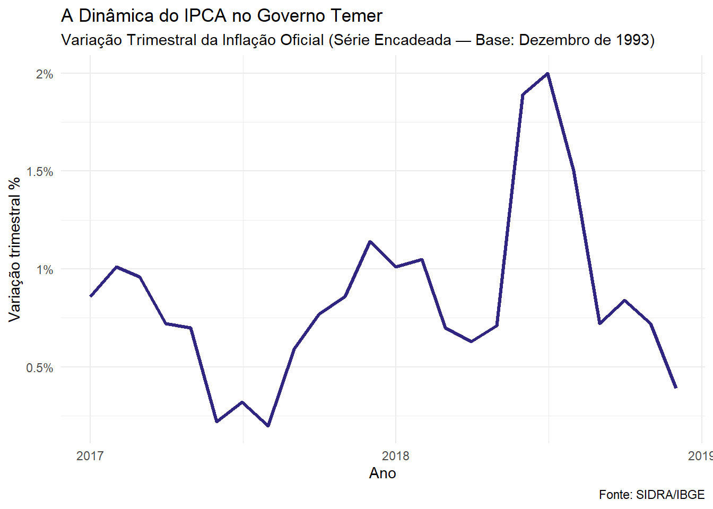
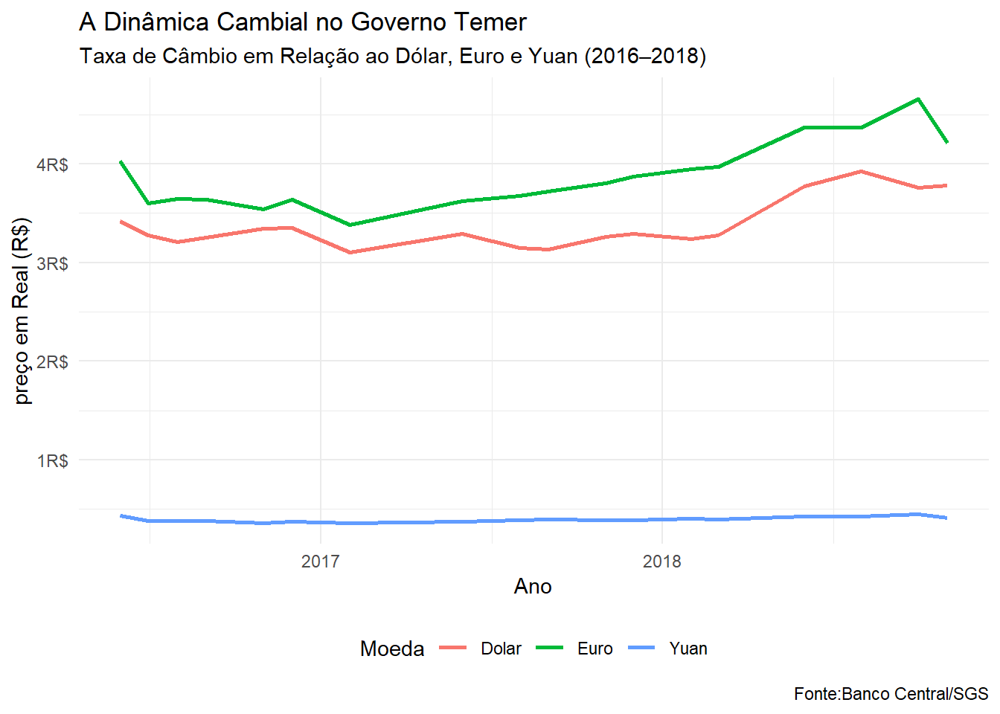
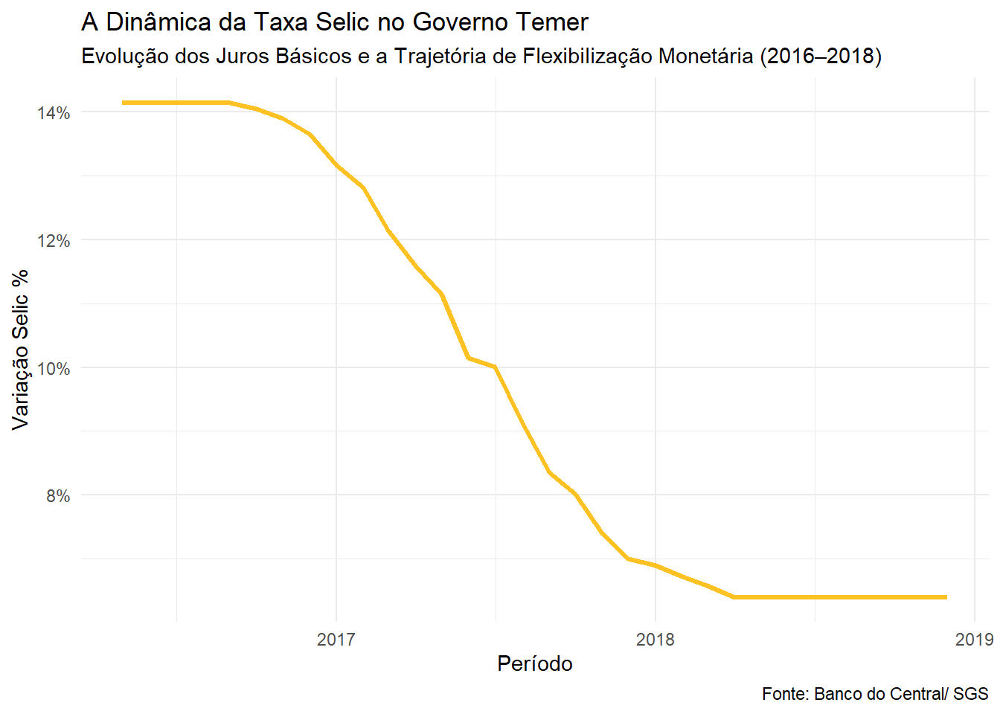

O Governo Michel Temer (2016–2018): A Agenda de Austeridade e a Ponte para o Futuro
Introdução
“Não se pode gastar mais do que se arrecada. Essa é uma regra de qualquer dona de casa e deve ser a regra do governo”
— Michel Temer
Michel Temer, que era vice-presidente de Dilma Rousseff, assumiu o governo após o desfecho do processo de impeachment da titular. Temer foi um personagem central na transição política, posicionando-se a favor do afastamento e articulando as bases de apoio no Congresso Nacional. Ademais, seu partido, o PMDB (Partido do Movimento Democrático Brasileiro), mesmo antes da destituição definitiva, utilizou seus canais de propaganda para apresentar um programa de governo intitulado “Uma Ponte para o Futuro”. Este documento detalhava uma agenda de reformas estruturais de grande interesse dos agentes de mercado e capitais, fundamentada em propostas de corte de gastos públicos, privatizações e forte flexibilização econômica.
Mesmo antes de assumir em definitivo, a nova gestão já havia iniciado a implementação dessa agenda ao assumir interinamente o poder em maio de 2016, momento em que o processo de impeachment era votado no Poder Legislativo. Portanto, em 31 de agosto de 2016, quando o afastamento definitivo de Dilma Rousseff foi chancelado, a linha de governo da gestão Temer já se encontrava em execução prática.
O cerne macroeconômico do governo Temer baseou-se em um duro diagnóstico de austeridade fiscal para reverter a recessão herdada de 2015. A medida mais emblemática desse período foi a aprovação da Emenda Constitucional do Teto de Gastos (EC 95), que limitou o crescimento das despesas públicas à variação da inflação por 20 anos. Paralelamente, o governo focou em reformas estruturais microeconômicas, culminando na aprovação da Reforma Trabalhista em 2017, cujo objetivo era reduzir os custos de contratação e tentar atrair capital privado para reaquecer a atividade econômica. Embora essas medidas tenham agradado o mercado financeiro e ajudado a ancorar as expectativas, o governo enfrentou severa impopularidade e episódios de forte instabilidade política, como a greve dos caminhoneiros em 2018, que provocou choques temporários de oferta na economia.
Para compreender os desdobramentos e os impactos práticos dessa agenda de austeridade e reformas estruturais, este bloco analisa a evolução integrada de três indicadores fundamentais:
A Inflação (IPCA): O comportamento dos preços diante das medidas de contenção fiscal e o forte processo de desinflação decorrente da recessão herdada sobre a demanda.
A Dinâmica Cambial: A flutuação e a estabilização relativa da moeda nacional frente às reformas econômicas e ao ambiente político polarizado.
A Taxa Selic: A condução dos juros básicos pelo Banco Central, que aproveitou a queda da inflação para executar um dos maiores ciclos de corte da história recente, buscando reestimular a atividade.
A Inflação (IPCA)
Com o impeachment de Dilma Rousseff aprovado em agosto de 2016, Temer assumiu um país em recessão profunda, com desemprego em alta e uma inflação que havia fechado 2016 em 6,29% — acima do teto da meta. O programa econômico do novo governo, batizado de “Ponte para o Futuro”, tinha como eixo central o ajuste fiscal: Teto de Gastos constitucionalizando o limite do gasto público, Reforma Trabalhista flexibilizando o mercado de trabalho e uma tentativa frustrada de Reforma da Previdência. À frente do Ministério da Fazenda estava o banqueiro Henrique Meirelles; no Banco Central, o também banqueiro Ilan Goldfajn, que adotou uma política de câmbio livre e começou a cortar a Selic apenas em outubro de 2016 — meses depois de a inflação já ter começado a ceder.
O mecanismo por trás da desinflação, no entanto, não foi apenas a política monetária. Foi a recessão. Com o consumo das famílias retraído, o desemprego acima de 13% e a economia operando bem abaixo da sua capacidade, a pressão de demanda simplesmente desapareceu — e os preços responderam na mesma direção. A inflação caiu de 6,29% em 2016 para 2,95% em 2017, o menor patamar em mais de uma década. Era uma desinflação real, mas construída sobre um chão frágil: não havia crescimento, não havia emprego e não havia renda.
Olhando para a linha, o primeiro movimento que chama atenção é a queda consistente ao longo de 2017. A variação trimestral recua de cerca de 1% no início do ano para próximo de 0,3% no segundo semestre — o ponto mais baixo de todo o período. Esse comportamento reflete com precisão o ambiente recessivo herdado: com o desemprego alto e o consumo travado, os preços simplesmente não tinham por onde subir.
A partir do final de 2017 e ao longo de 2018, o gráfico muda de direção. A linha sobe de forma gradual, chegando próxima de 1,2% no início de 2018 — sinal de que a economia começava timidamente a se recuperar. Mas o movimento mais dramático vem no meio de 2018: a variação trimestral dispara para próximo de 2%, o pico de todo o período. Esse salto tem uma causa bem definida — a greve dos caminhoneiros de maio de 2018, que paralisou o abastecimento do país por dias e provocou um choque imediato nos preços de alimentos, combustíveis e transportes.
O choque foi pontual. Logo em seguida, a linha cai de forma abrupta, encerrando 2018 abaixo de 0,5%. A inflação fechou o ano em 3,75% — dentro da meta, mas num contexto de crescimento ainda fraco e desemprego persistentemente elevado. Era o retrato de um governo que controlou a inflação não pelo vigor da economia, mas pela ausência dele.
A Dinâmica Cambial

O gráfico do câmbio no governo Temer conta uma história de real enfraquecido — e por razões que têm pouco a ver com os fundamentos da economia. Em 2016, o dólar já estava em torno de R$ 3,30 e o euro próximo de R$ 4,00, patamares herdados da turbulência do impeachment. Ao longo de 2017, as duas linhas se mantêm relativamente estáveis, com leve queda no segundo semestre — o mercado reagia positivamente às reformas aprovadas pelo governo, especialmente o Teto de Gastos e a Reforma Trabalhista.
A estabilidade durou pouco. Em 2018, o gráfico muda de comportamento: dólar e euro sobem de forma consistente ao longo do ano, com o dólar se aproximando de R$ 4,00 e o euro ultrapassando R$ 4,50 no pico. Dois fatores explicam essa alta. O primeiro foi externo — os Estados Unidos elevaram os juros, atraindo capital para fora dos mercados emergentes. O segundo foi interno — a greve dos caminhoneiros em maio e a incerteza eleitoral com a aproximação de outubro jogaram o real para baixo, com o mercado precificando o risco político de uma eleição imprevisível.
No final de 2018, as linhas recuam levemente — mas sem retornar aos patamares do início do governo. O yuan, como em todos os mandatos anteriores, permanece colado no chão, imune a qualquer movimento. Era a mesma política cambial administrada da China — e o mesmo contraste silencioso com um real que, nesse período, revelou toda a sua fragilidade diante da instabilidade política.
A Taxa Selic

O gráfico da Selic no governo Temer é o mais simples de todos os que analisamos até aqui: uma linha que começa alta e cai de forma quase ininterrupta até o final do mandato. Não há soluços, não há reversões — apenas um ciclo de cortes longo e consistente.
O ponto de partida, em 2016, é uma taxa de 14,25% ao ano — herdada diretamente do governo Dilma, que havia elevado os juros para tentar conter a inflação que escapou do controle nos seus anos finais. Com a economia em recessão profunda e os preços cedendo, o Banco Central sob o comando de Ilan Goldfajn começou a cortar a Selic em outubro de 2016 — mas de forma cautelosa, só depois de ter certeza de que a desinflação era duradoura.
A partir de 2017, o ritmo dos cortes se acelerou. A linha despenca de 14% para 10% ao longo daquele ano — uma queda de quatro pontos percentuais em poucos meses. O ambiente era favorável: a inflação havia caído para 2,95%, bem abaixo da meta, e a economia, embora ainda fraca, dava sinais de estabilização. O BC aproveitou a janela e cortou com força.
Em 2018, a Selic chegou a 6,5% ao ano — o menor patamar da história do regime de metas até aquele momento. O gráfico termina com a linha praticamente estável nesse patamar, sinalizando que o BC havia chegado ao piso do ciclo. Era o resultado de dois anos de queda consistente — mas numa economia que crescia apenas 1,8% e carregava mais de 12 milhões de desempregados. Os juros mais baixos da história não foram suficientes para reanimar o país.